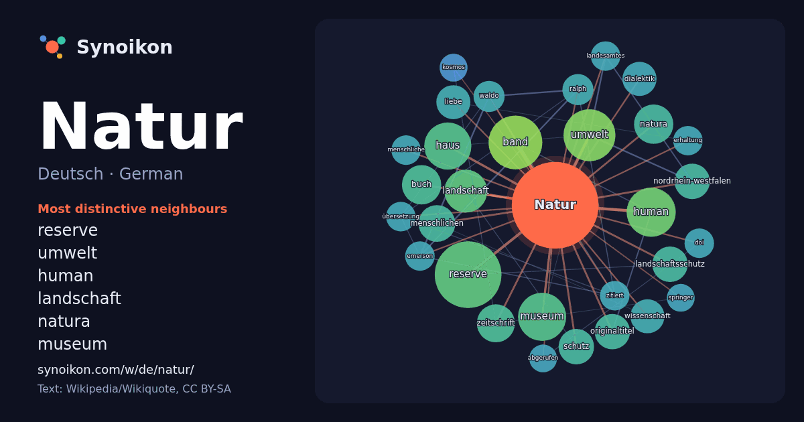

Deutsch · German · popular word
Natur
“nature” · The words found around it in 1139 instances from German Wikipedia, Wikiquote.

Most distinctive neighbours
- reserve 43×
- umwelt 26×
- human 25×
- landschaft 17×
- natura 17×
- museum 16×
- band 14×
- landschaftsschutz 14×
- menschlichen 13×
- dialektik 13×
- originaltitel 13×
- haus 13×
- nordrhein-westfalen 12×
- zeitschrift 12×
- waldo 11×
- wissenschaft 11×
- buch 10×
- ralph 10×
- schutz 10×
- liebe 10×
× = how many times more often than in general German Wikipedia text.
Most frequent neighbours
- reserve 46
- band 30
- umwelt 28
- human 25
- museum 24
- haus 23
- landschaft 19
- buch 16
- natura 16
- deutschen 15
- zeitschrift 15
- menschlichen 14
- landschaftsschutz 13
- leben 13
- nordrhein-westfalen 13
- originaltitel 13
- schutz 13
- dialektik 12
- liebe 12
- wissenschaft 12
In context
- Natur (lateinisch natura von nasci „entstehen, entspringen, seinen Anfang nehmen, herrühren“, semantische Entsprechung zu altgriechisch φύσις physis) Wikipedia snippets · Natur
- Nature: a weekly journal of science ist eine wöchentlich erscheinende, englischsprachige Fachzeitschrift mit Themen aus verschiedenen, vorwiegend naturwissensch … Wikipedia snippets · Nature
- Über die Natur (altgriechisch περὶ φύσεως perì phýseōs) ist der Titel zahlreicher philosophischer Werke. Er wurde zuerst von den griechischen Naturphilosophen Wikipedia snippets · Über die Natur
- Die International Union for Conservation of Nature (IUCN; deutsch Internationale Union zur Bewahrung der Natur), früher als Weltnaturschutzunion bezeichnet Wikipedia snippets · IUCN
- Natur (von mittelhochdeutsch natūr(e)) steht für: Natur, allgemein all das, was nicht vom Menschen geschaffen wurde Umwelt Die Natur, erste Wikipedia snippets · Natur (Begriffsklärung)
- Der Begriff Natur des Jahres umfasst mehrere jährlich zum Zwecke der Öffentlichkeitsarbeit für den Arten- und Biotopschutz nominierte Arten und Lebensräume Wikipedia snippets · Natur des Jahres
- Das Buch der Natur, auch das Buch von den natürlichen Dingen, auch Naturbuch genannt, ist eine naturkundliche Enzyklopädie von Konrad von Megenberg (erste Wikipedia snippets · Das Buch der Natur
- Hess Natur (Eigenschreibweise: hessnatur) ist ein deutsches Textilunternehmen mit Sitz in Butzbach in Hessen, das 1976 gegründet wurde und sich auf Bekleidung Wikipedia snippets · Hess Natur
More German words
- Arbeit
- Brücke
- Essen
- Familie
- Geld
- Geschichte
- Gesundheit
- Gold
- Gott
- Kunst
- Leben
- Macht
- Tod
- Wahrheit
- Wasser
- Wissenschaft
- Zug
Precomputed on 2026-10-09 with default settings (±5 words, medium corpus). The interactive map can refresh it with live data.